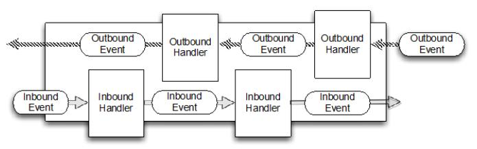

入门
Table of Contents
Netty异步和数据驱动
什么是 Netty
Netty 是一个利用 Java 的高级网络的能力，隐藏其背后的复杂性而提供一个易于使用的 API 的客户端/服务器框架 Netty 提供高性能和可扩展性，让你可以自由地专注于你真正感兴趣的东西，你的独特的应用！ 在这一章将解释 Netty 在处理一些高并发的网络问题体现的价值 然后，将介绍基本概念和构成 Netty 的工具包以及其余部分深入研究
历史
在网络发展初期，需要花很多时间来学习 socket 的复杂，寻址等等，在 C socket 库上进行编码，并需要在不同的操作系统上做不同的处理
Java 早期版本(1995-2002)介绍了足够的面向对象的糖衣来隐藏一些复杂性，但实现复杂的客户端-服务器协议仍然需要大量的样板代码（和进行大量的监视才能确保他们是对的）
这些早期的 Java API（java.net）只能通过原生的 socket 库来支持所谓的 blocking（阻塞） 的功能。一个简单的例子：
ServerSocket serverSocket = new ServerSocket(portNumber);//1 Socket clientSocket = serverSocket.accept(); //2 BufferedReader in = new BufferedReader( //3 new InputStreamReader(clientSocket.getInputStream())); PrintWriter out = new PrintWriter(clientSocket.getOutputStream(), true); String request, response; while ((request = in.readLine()) != null) { //4 if ("Done".equals(request)) { //5 break; } } response = processRequest(request); //6 out.println(response); //7 } //8
- ServerSocket 创建 并 监听 端口的连接请求
- accept() 调用 阻塞 ， 直到一个连接 被 建立 了
- 返回一个 新的 Socket 用来处理 客户端和服务端的交互
- 流被创建用于处理 socket 的输入和输出数据
- BufferedReader ：读取从字符输入流里面的本文
- PrintWriter ： 打印格式化展示的对象读到本文输出流
- 处理循环开始 readLine() 阻塞， 读取字符串直到最后是换行或者输入终止
- 如果客户端发送的是 Done 处理 循环退出
- 执行方法处理请求，返回服务器的响应
- 响应发回客户端
- 处理循环继续
显然，这段代码限制每次只能处理一个连接
为了实现多个并行的客户端需要分配一个新的 Thread 给每个新的客户端 Socket
但考虑使用这种方法来支持大量的同步，长连接
在任何时间点多线程可能处于休眠状态，等待输入或输出数据
这很容易使得资源的大量浪费，对性能产生负面影响
原生 socket 库同时也包含了 非阻塞 I/O 的功能：
- 能够 确定 任何一个 socket 中是否 有数据准备读或写
- 可以 设置标志 ，因为读/写调用 如果没有数据 立即返回
通过这种方法，会带来更大的代码的复杂性成本
JAVA NIO
在 2002 年，Java 1.4 引入了非阻塞 API 在 java.nio 包（NIO）
"New"还是"Nonblocking"?
NIO 最初是为 New Input/Output 的缩写 然而，Java 的 API 已经存在足够长的时间，它不再是新的 现在普遍使用的缩写来表示Nonblocking I/O (非阻塞 I/O) 另一方面，一般指阻塞 I/O 为 OIO 或 Old Input/Output
图 1.1 展示了方法必须扩大到处理多个连接：
给每个连接创建一个线程，有些连接是空闲的
显然，这种方法的可扩展性将是受限于可以在 JVM 中创建的线程数！
应用中 连接数比较少 ，这个方案还是可以接受
当并发连接超过10000 时，上下文切换开销将是明显的
此外，每个线程都有一个默认的堆栈内存分配了 128K 和 1M 之间的空间
考虑到整体的内存和操作系统需要处理 100000 个或更多的并发连接资源，这似乎是一个不理想的解决方案
SELECTOR
图1.2 显示了使用 非阻塞I/O ，主要是消除了这些方法约束。 Selector 是 Java 的无阻塞 I/O 实现的关键：
Selector ： 最终 决定 哪一组注册的 socket 准备执行 I/O。总体而言，该模型提供了比 阻塞 I/O 模型 更好的资源使用，因为：
- 可以 用较少的线程 处理更多连接
- 更少的开销在内存和上下文切换上
- 当没有 I/O 处理时，线程可以被重定向到其他任务上
I/O 操作设置为非阻塞模式。通过通知，一个线程可以同时处理多个并发连接。
一个 Selector 由一个线程通常处理，但具体实施可以使用多个线程
因此，每次读或写操作执行能立即检查完成
可以直接用这些 Java API 构建的 NIO 建立你的应用程序，但这样做 正确和安全是无法保证的
实现可靠和可扩展的 （事件处理器）来处理和调度数据并保证尽可能有效地，这是一个繁琐和容易出错的任务
Netty 介绍
一个应用想要支持成千上万并发的客户端，在以前，这样的想法会被认为是荒谬。而在今天，我们认为这是理所当然的。事实上，开发者知道，总是会有这样的需求——以较低的成本交付来换取更大的吞吐量和可用性
我们不要低估最后一点的重要性。我们从漫长的痛苦的经验学习到，低级别的 API 不仅暴露了高级别直接使用的复杂性，而且引入了过分依赖于这项技术所造成的短板。因此，面向对象的一个基本原则：通过抽象来隐藏背后的复杂性
这一原则已见成效，框架的形式封装解决方案成为了常见的编程任务，他们中有许多典型的分布式系统。现在大多数专业的 Java 开发人员都熟悉一个或多个这些框架（比如 Spring），并且许多已成为不可或缺的，使他们能够满足他们的技术要求以及他们的计划
技术和特点
下面展示了 Netty 技术和方法的特点：
- 设计
- 针对多种传输类型的统一接口（阻塞和非阻塞）
- 简单但更强大的线程模型
- 真正的无连接的数据报套接字支持
- 链接逻辑支持复用
- 易用性
- 大量的 Javadoc 和 代码实例
- 除了在 JDK 1.6 + 额外的限制。（一些特征是只支持在Java 1.7 +。可选的功能可能有额外的限制）
- 性能
- 比核心 Java API 更好的吞吐量 ， 较低的延时
- 资源消耗 更少，这个得益于 共享池 和重用
- 减少内存拷贝
- 健壮性
- 消除由于慢，快，或重载连接产生的 OutOfMemoryError
- 消除经常发现在 NIO 在高速网络中的应用中的 不公平的读/写比
- 安全
- 完整的 SSL / TLS 和 StartTLS 的支持
- 运行在受限的环境例如 Applet 或 OSGI
- 社区
- 发布的更早和更频繁
- 社区驱动
异步和事件驱动
所有的网络应用程序需要被设计为 可扩展性 ， 一个系统，网络能力，或过程中能够处理越来越多的工作方式或可扩大到容纳增长的能力
Netty 帮助您利用非阻塞 I/O 完成这一目标，通常称为“异步 I/O” 异步，即非同步事件，当然是跟日常生活的类似。例如 可以发送电子邮件；可能得到或者得不到任何回应，或者当你发送一个您可能会收到一个消息 异步事件也可以有一个有序的关系。例如 你通常不会收到一个问题的答案直到提出一个问题，但是你并没有阻止同时一些其他的东西 在日常生活中异步就这样发生了，所以我们不会经常想到 但让计算机程序的工作方式，来实现提出了的特殊的问题，会有一点复杂
在本质上，一个系统是 异步 和 事件驱动 将会表现出一个特定的，有价值的行为： 它可以 响应 在 任何时间 以 任何顺序 发生的事件
Netty构件
非阻塞 I/O 不会强迫我们等待操作的完成。在这种能力的基础上，真正的异步 I/O 起到了更进一步的作用: 一个异步方法完成 时 立即返回 并 直接 或 稍后 通知用户
在一个网络环境的异步模型可以更有效地利用资源，可以快速连续执行多个调用
Channel
Channel 是 NIO 基本的结构：一个 用于连接到实体 如 硬件设备 、 文件 、 网络套接字 或 程序组件 ， 能够执行 一个或多个 不同的 I/O 操作 （例如读或写）的 开放连接
把 Channel 想象成一个可以“打开”或“关闭”,“连接”或“断开”和作为传入和传出数据的运输工具
Callback
callback 是一个 简单的方法 ， 提供 给 另一种方法 作为 引用 ，这样后者就可以在某个合适的时间调用前者
最常见的用途就是 通知给其他人操作已完成 Netty 内部使用回调处理事件时
一旦这样的 回调被触发 ， 事件 可以由接口 ChannelHandler 的实现来处理。例如：
public class ConnectHandler extends ChannelInboundHandlerAdapter { @Override public void channelActive(ChannelHandlerContext ctx) throws Exception { //1 System.out.println( "Client " + ctx.channel().remoteAddress() + " connected"); } }
一旦 一个新的连接建立了 ,调用 channelActive() ，并将打印一条消息
Future
Future 提供了另外一种 通知应用操作已经完成 的方式：
- 这个 对象 作为一个 异步操作 结果的占位符
- 它在 将来的某个时候 完成并提供结果
JDK 附带接口 java.util.concurrent.Future ，但所提供的实现只允许您手动检查操作是否完成或阻塞了 这是很麻烦的，所以 Netty 提供自己了的实现,ChannelFuture，用于在执行异步操作时使用
ChannelFuture ： 提供多个方法来允许一个或者多个 ChannelFutureListener 实例
- 这个回调方法 operationComplete() 会在 操作完成 时 调用
- 事件监听者 能够 确认 这个操作 是否成功 或者 错误
- 如果是后者， 可以检索 到 产生的 Throwable
简而言之, ChannelFutureListener 提供的通知机制不需要手动检查操作是否完成的
每个 Netty 的 outbound I/O 操作都会返回一个 ChannelFuture，这样就不会阻塞
这就是 Netty 所谓的 自底向上的异步和事件驱动
ChannelFuture实例
下面例子简单的演示了作为 I/O 操作的一部分 ChannelFuture 的返回：
- 当调用 connect() 将会是 非阻塞 的，并且 调用在背后完成
- 由于线程是非阻塞的，所以无需等待操作完成，而可以去干其他事，因此这令 资源利用更高效
Channel channel = ...; //不会阻塞 ChannelFuture future = channel.connect( new InetSocketAddress("192.168.0.1", 25));
ChannelFutureListener
下面代码描述了如何利用 ChannelFutureListener ：
Channel channel = ...; //不会阻塞 ChannelFuture future = channel.connect( //1 new InetSocketAddress("192.168.0.1", 25)); future.addListener(new ChannelFutureListener() { //2 @Override public void operationComplete(ChannelFuture future) { if (future.isSuccess()) { //3 ByteBuf buffer = Unpooled.copiedBuffer( "Hello", Charset.defaultCharset()); //4 ChannelFuture wf = future.channel().writeAndFlush(buffer); //5 // ... } else { Throwable cause = future.cause(); //6 cause.printStackTrace(); } } });
- 连接到远程地址
- 通过 ChannelFuture 调用 connect() 来 注册 一个新 ChannelFutureListener
- 当 监听器 被 通知 连接完成
- 检查状态
- 如果是 成功 ，就 写数据 到 Channel
- 检查 ChannelFuture 中的 Throwable
注意：错误的处理取决于你的项目
当然特定的错误是需要加以约束的。例如
在连接失败的情况下你可以尝试连接到另一个
Event 和 Handler
Netty 使用 不同的事件 来 通知 更改的状态 或 操作的状态 。能够根据发生的事件触发适当的行为。这些行为可能包括：
- 日志
- 数据转换
- 流控制
- 应用程序逻辑
由于 Netty 是一个网络框架，事件很清晰的跟入站或出站数据流相关。因为一些事件可能触发传入的 数据或状态的变化 包括：
- 活动 或 非活动 连接
- 数据的读取
- 用户事件
- 错误
出站事件是由于在未来操作将触发一个 动作 。这些包括：
- 打开 或 关闭 一个 连接到远程
- 写 或 冲刷 数据到 socket
每个事件都可以分配给用户实现处理程序类的方法 这说明了事件驱动的范例可直接转换为应用程序构建块
下图显示了一个事件可以由一连串的事件处理器来处理：

Netty 的 ChannelHandler 是各种 处理程序的基本抽象 。每个 处理器实例 就是一个 回调 ，用于 执行对各种事件的响应
在此基础之上，Netty 也提供了一组丰富的预定义的处理程序，可以开箱即用
比如，各种协议的编解码器包括 HTTP 和 SSL/TLS
在内部，ChannelHandler 使用事件和 future 本身，创建具有 Netty 特性抽象的消费者
整合
FUTURE, CALLBACK 和 HANDLER
Netty 的异步编程模型是建立在 future 和 callback 的概念上的
所有这些元素的协同为自己的设计提供了强大的力量
拦截操作 和 转换入站或出站数据 只需要 提供回调 或 利用 future 操作 返回的
这使得链操作简单、高效，促进编写可重用的、通用的代码
一个 Netty 的设计的主要目标是促进 关注点分离 ：
使业务逻辑从网络基础设施应用程序中分离
SELECTOR, EVENT 和 EVENT LOOP
- 通过 触发事件 从 应用程序 中 抽象 出 Selector ，从而避免手写调度代码
- EventLoop 分配给每个 Channel 来 处理所有的事件 ，包括
- 注册感兴趣的事件
- 调度事件到 ChannelHandler
- 安排进一步行动
该 EventLoop 本身是由只有一个线程驱动：
它给一个 Channel 处理所有的 I/O 事件，并且在 EventLoop 的生命周期内不会改变
这个简单而强大的线程模型消除可能对 ChannelHandler 同步的任何关注
这样就可以专注于提供正确的回调逻辑来执行